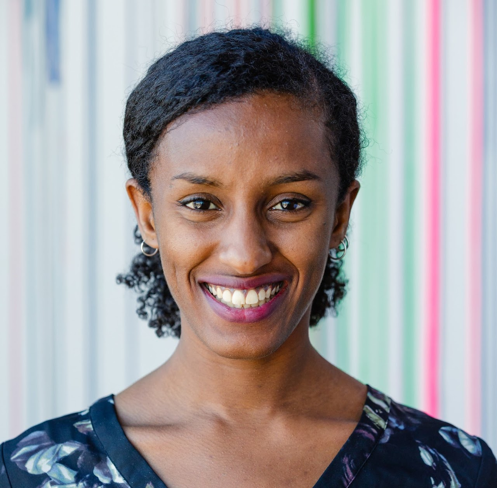

Speakers:
Dr. Kentaro Toyama
Professor, University of Michigan School of Information
15 Years of ICTD
The interdisciplinary field of information & communication technologies and development (ICTD) has explored how digital technologies could contribute to international socio-economic development. The associated research community includes designers, engineers, anthropologists, and sociologists among many others, with beliefs ranging from tech-utopianism to extreme skepticism about technology. Debates continue, but in this talk, I will attempt to summarize some of the expressed consensus in ICTD, and discuss why the field's interdisciplinary tension is essential.Dr. Dorothea Kleine
Co-Director of the Sheffield Institute for International Development at the University of Sheffield
Gender and Intersectionality in ICT4D
Gender equality has moved from being a niche topic in ICT4D/ICTD research championed by key proponents, to being a key SDG and unavoidable issue for projects and thus for all researchers, across disciplines. I will reflect on the progress made and on the conceptual contributions that assisted in cross-disciplinary dialogue about the issue. I will also reflect on the risks to further progress. These include policy makers and researchers paying lip service instead of seeking deeper engagement, or essentialising women as hard-to-reach groups for ICT projects instead of exploring and celebrating their agency within current patriarchal structures. How can these structures themselves be challenged? Further, gender is only one axis in a broader intersectional picture of inequality. How can researchers learn from gender equality work in order to move to an even more complex intersectional lens?Dr. Aaditeshwar Seth
Professor, IIT Delhi and Founder at Gram Vaani
Making ICTD More Impactful
The academic community in the broad 4D space has come a long way in highlighting the role that ICTs can play in development. I will attempt to highlight three areas where I feel we should introspect our work more deeply towards bringing greater impact. First, the gap between academia and practice seems to persist, and we may want to rethink typical models of engagement between academicians and practitioners. Second, despite the caveats highlighted by the 4D community on the limits of technology alone to drive impact, much thinking of governments, donors, and investors, still seems to be driven by a top-down tech deterministic approach. What should we do to change this mindset? Third, given the high levels of inequality and exploitation in the world, we should ask ourselves if we are using relevant lenses to understand the world and build solutions. The COVID-19 pandemic may present an opportunity for us to reorient our approach.

Dr. Rediet Abebe
Junior Fellow at the Harvard Society of Fellows, incoming Assistant Professor of Computer Science at the University of California, Berkeley
Roles for Computing in Social Justice
Recent scholarship in AI ethics warns that computing work has treated problematic features of the status quo as fixed, failing to address and even exacerbate deep patterns of injustice and inequality. Acknowledging these critiques, we ask: what roles, if any, can computing play to support and advance fundamental social change? We articulate four such roles -- computing as a diagnostic, formalizer, rebuttal, and synecdoche -- through an analysis that considers the opportunities as well as the significant risks inherent in such work. We then discuss how these insights may be used to support advocacy work aimed at fostering more equitable and just systems.